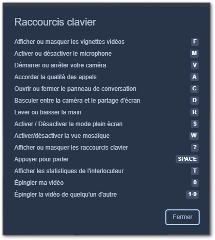
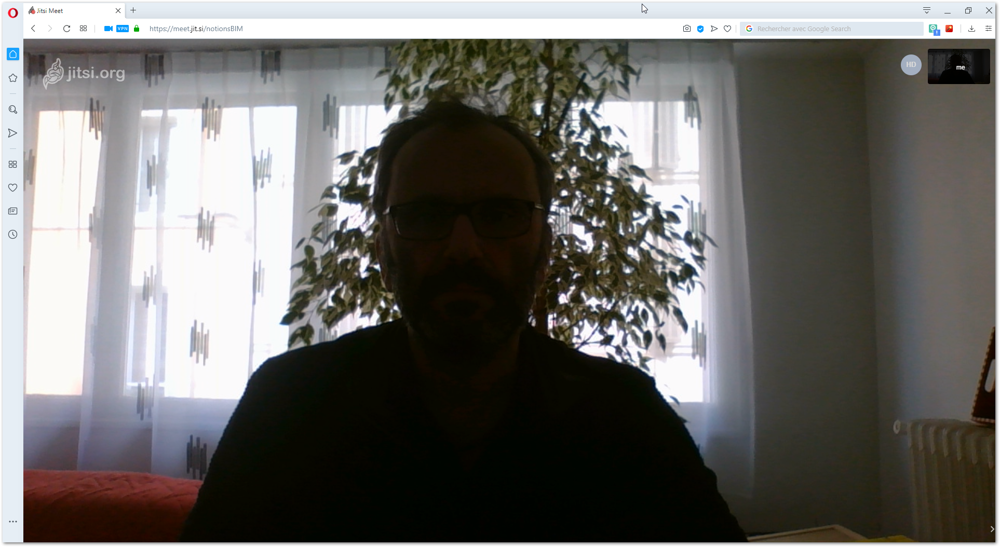
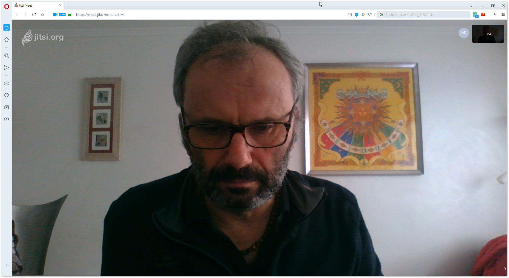
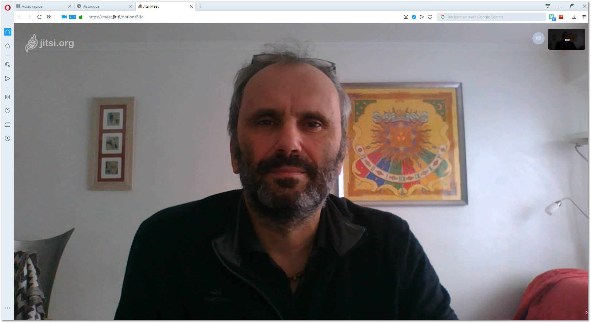

Visioconférence
Description
Jitsi meet est une application de visioconférence qui ne requiert aucune installation, seulement la caméra et le micro de votre ordinateur.
Accès au service
-
se rendre sur la page Internet Jitsi Meet (meilleur navigateur : Chrome ?, avec Opera le paramétrage de base a fonctionné totalement)
-
paramétrages de base (clic sur roue dentée en haut à droite) :
-
périphériques vidéo et voix : accepter les demandes d’accès à votre caméra et votre micro …
-
nom d’utilisateur (pseudo) et mail → (
olitureto.turlier@gmail.com) -
Calendrier (efficace en "conf call" pro) → j’ai autorisé jitsi à accéder à mon calendrier google …
-
Langue de l’interface : Anglais → Français
-
Création d’une visio conférence et invitation d’autres participants
-
réfléchir à un titre explicite relatif à la visioconférence →
notions BIM -
l’écrire dans la ligne située sous le titre Démarrer une nouvelle réunion
-
clic sur le bouton Créer
Au bout d'1 ou 2 secondes, vous vous voyez vous même…Il est temps de vous détourner de cette contemplation pour noter les paramètres d’accès à ce "salon" virtuel de visio afin de pouvoir inviter les collègues
Auparavant, on peut configurer plus en avant cette visio
Paramétrage supplémentaire
-
Activer le flou d’arrière plan : pratique lorsqu’on travaille depuis chez soi et qu’on a pas rangé, ou que votre maman passe derrière pour le faire… !
Invitation d’autres membres
Copier les infos d’invitation : diriger la souris vers le coin bas à droite et cliquer sur l’icône en forme de point d’exclamation :
-
les propriétés s’affichent
-
cliquer sur copier
-
vous obtiendrez ce type de texte en le collant dans un mail d’invitation
olitur vous invite à une réunion.
Rejoindre la réunion: https://meet.jit.si/notionsBIM
Pour rejoindre depuis un téléphone, saisissez : +1.512.402.2718,,619067009#
Vous cherchez un numéro d’appel différent? Afficher les numéros d’appel de la réunion: https://meet.jit.si/static/dialInInfo.html?room=notionsBIM
Si vous appelez également via un téléphone de salle, vous pouvez vous connecter sans audio: https://meet.jit.si/notionsBIM#config.startSilent=true
Usage courant
Vous avez :
-
créé une visioconférence avec un titre explicite
-
invité vos collègues par mail, évènement calendrier, etc. à rejoindre cette visio
Vous commencez la visio conférence et souhaitez :
Activer le partage d’écran
-
soit par le raccourci D
-
soit en cliquant sur le bouton adhoc en bas à gauche
-
choix de ce que vous voulez partager :
-
le ou les ou tous les écrans (en cas de double ou triple écran)
-
ou l’application de votre choix
-
Echanger en "privé" avec un membre distant
-
soit par le raccourci C
-
soit en cliquant sur le bouton adhoc en bas à gauche
-
et commencer à chatter avec cette personne tout en écoutant les autres… (àla "djeun")
Echanger en privé avec des membres présents
Il suffit de couper le micro…
-
soit par le raccourci M
-
soit en cliquant sur le bouton adhoc en bas au milieu gauche (micro)
Prendre la parole
Comme dans une réunion physique, il suffit de lever la main et de parler … D’autres parlent sans avoir levé la main au préalable …
-
soit par le raccourci R (Request Demande de parler) puis Espace pour parler
-
soit en cliquant sur les boutons adhoc : main en bas à gauche puis barre d’Espace pour parler (= activation/désactivation du micro)
Raccourcis au complet
On peut afficher les raccourcis en cliquant sur le bouton des propriétés (en bas à droite, 3 points), soit , mais il faut s’en souvenir pendant la visio, ou les afficher de nouveau
Récap des raccourcis ci-dessous, que l’on pourra afficher avec ? : 
-
F Afficher ou masquer les vignettes vidéos des autres participants
-
M Activer ou désactiver le microphone pour parler en privé
-
V Démarrer ou arrêter votre caméra
-
A Accorder la qualité des appels
-
C Ouvrir ou fermer le panneau de conversation "chat" en ligne
-
D Basculer entre la caméra et le partage d’écran
-
R Lever ou baisser la main pour prendre la parole
-
S Activer/désactiver le mode plein écran
-
w Activer/désactiver la vue mosaïque
-
? Afficher ou masquer les raccourcis clavier
-
Espace Appuyer pour parler
-
T Afficher les statistiques de l’interlocuteur
-
O Epingler ma vidéo ?
-
1-9 Epingler la vidéo de quelqu’un d’autre
Conditions idéales
Une visioconférence, c’est se présenter aux autres…
Essayons de le faire sous le meilleur angle en tentant de se rapprocher des conditions idéales correspondant à un environnement "serein"
A éviter
-
Eclairage de dos
La lumière dans le dos, c’est parfait pour voir l’écran, mais totalement inapproprié pour effectuer une visio! L’exemple ci-dessous se passe de commentaires !Figure 6. mode "agent secret"on→ à éviter!Il faut donc que votre visage soit éclairé par votre foi une lumière douce (on évite le mode "gestapo" donc ouf!)
-
Regard désaxé Savez-vous où est implantée la caméra de votre ordinateur ?
Si c’est en haut de l’écran, et que vous regardez le clavier ça donne un bel aperçu de votre chevelure abondante …
Figure 7. mode "tête baissée"on→ à éviter! -
Ambiance sonore
Un environnement globalement silencieux est préférable à un milieu bruyant (quelle idée de faire une visio dans un TGV … déjà vu!) ou très silencieux (les auditeurs risquent alors d’entendre votre respiration, les clics de souris ou tout autre bruit anodin rendu important par son émergence)
Tout dépend de la qualité de votre micro, du bruit émis par le ventilateur de l’ordinateur, etc.
A privilégier
-
éclairage naturel
-
normalement silencieux
-
regard dans l’axe de la caméra
Figure 8. Je vous écoute, à vous
Aller plus loin : Partager des fichiers
Les systèmes sont nombreux, la sécurité plus ou moins bonne et selon les configurations (pare feu d’entreprise) vous pourrez plus ou moins y accéder …
Le principe repose sur 2 étapes :
-
téléversement (ou upload) par l’auteur du fichier (idéalement "encapsulé" dans une archive
.zipvers "Internet" (ou le cloud )-
récupération du lien de téléchargment une fois celui-ci effectué
-
envoi de ce lien par mail à vos destinataires
-
-
téléchargement (ou upload) par le destinataire depuis "Internet"
-
le destinataire clique sur le lien
-
il choisit l’emplacement du téléchargement et lance celui-ci
-
il dézippe l’archive (logiciel idéal → 7zip) dans un dossier éponyme et accède au fichier en se déplaçant dans le dossier nouvellement créé
-
Envoi "unique" par interface WEB
Parfait pour envoyer ponctuellement des archives. Les 2 systèmes ci-dessous ont au moins 2 avantages :
-
crypage des données de bout en bout
-
rien à installer sur l’ordinateur
Je n’ose pas décrire leur utilisation, à vous de voir! Un clic sur l’image et vous y êtes…
Smash
Smash à le mérite d’être Français (ça vous évitera d’utiliser Wetransfer et ses relations avec le NSA …)
Dossier synchronisé sur le "Cloud"
Les services sont nombreux et offrent , en version gratuite , un espace de stockage qui peut être intéressant . Le premier stade des versions payantes l’est encore plus au niveau espace de stockage, toutes les offres étant équivalantes : 100 GO / 2 € / mois (Icloud / Google Drive / Dropbox / PCloud / Microsoft Onedrive)
Si vous vous sentez concernés par la sécurité de vos données, plusieurs services commerciaux proposent de chiffer vos données à la volée, mais les offres sont moins intéressantes, sauf celle de Mega (Kim Dotcom …) qui offre 50 GO (au lieu de 2 GO pour Dropbox …)
Démarrage du service
-
inscription sur le site du fournisseur (Dropbox, Mega, Drive …)
-
téléchargement & installation du client de synchronisation
-
configuration de ce logiciel : lui indiquer le dossier à synchroniser
Utilisation basique
-
tout fichier/dossier que vous créez/modifiez/supprimez en local sera créé/modifié/supprimé dans le "cloud"
{kind=link}
{kind=link}
{kind=link}